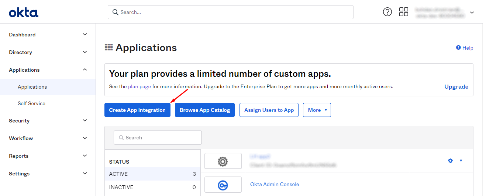
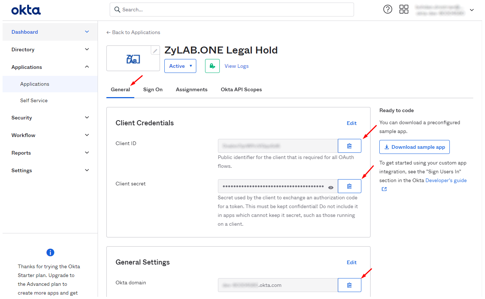
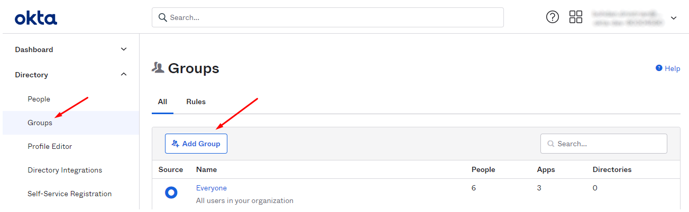
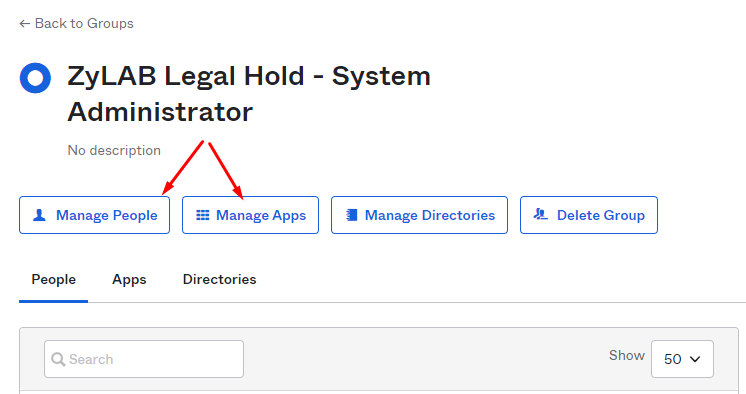
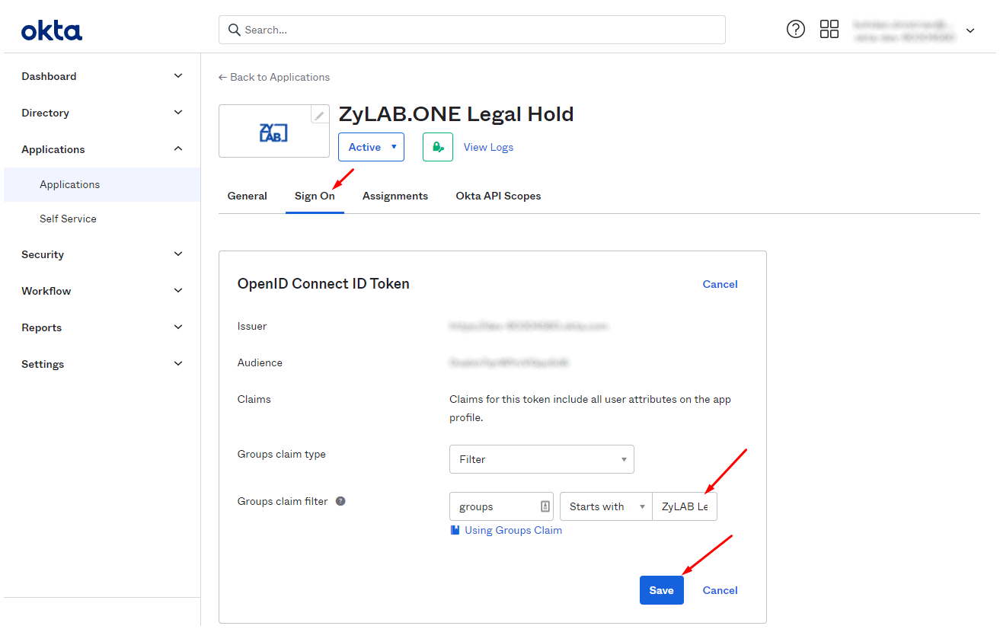
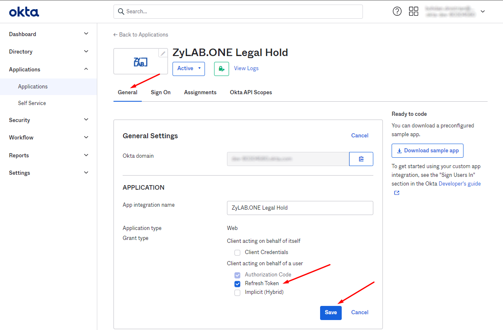
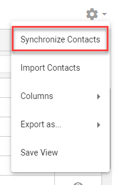

Note: Must be performed by an Okta Administrator.
In this topic, you'll learn how to add Okta as an identity provider.
|
|
Note: Must be performed by an Okta Administrator. |
Go to the Applications page in Okta and click Create App Integration.

Select OIDC - OpenID Connect and then Web Application.
Fill out the following:
App integration name: ZyLAB.ONE Legal
Sign-in redirect URIs: https://legalhold.domain/signin-mt-oidc
Note: The domain can be .one or .eu
Sign-out redirect URIs: https://legalhold.domain/signedOut
Note: The domain can be .one or .eu
(Optional) Configure Controlled access or leave it (Okta tenant users will only be able to login to the Custodian Portal)
Customize the application logo. Use the

|
|
Note: Must be done by an Okta Administrator. |
Send to
Subscription prefix
Description: Used as URL prefix to Legal Hold subscription, users must know it in order to access subscription, usually company name placed here.
Hint: Can be obfuscated if necessary - like you can use 'c123' instead of company name.
Restrictions: 2-24 of small Latin chars, numbers, dashes (can be placed only in the middle).
Example: contoso-us-1
Public identity tenant name
Description: This name will be visible to everybody knowing subscription url in login screen (tenant selection screen) if subscription has more than 1 identity tenants attached. Also visible in application as Custodian/Contact field so you can determine from which identity tenant the custodian originated.
Hint: Can be obfuscated if necessary - like you can use '1' instead of your company domain name 'Contoso main Okta' but users must be able to determine their login option.
Restrictions: Up to 100 of any symbols in any language.
Example: contoso
'Client ID' from application configuration in Okta (created in previous step), used to determine that it is the
'Okta domain' from application configuration in Okta, users will be basically redirected here if sign in via Okta selected.
'Client secret' from application configuration in Okta, used to prove that it's the trusted Legal Hold integration.

|
|
Note: When configured, some users from Okta will have roles other than custodian (Global Hold Manager, Global Hold Viewer, System Administrator, Matter Manager, Matter Viewer).
|
Sign in to Okta tenant admin panel.
Create groups with names from the table above (Okta column) and assign correspondent users there:

Assign group to Legal Hold (from groups tab via Manage Apps, or from app via Assign button in Assignments tab).

Allow Okta to send assigned groups with claims in application. Set Groups claim filter

Ask user from one of the groups to sign-in in order to check that groups propagation works.
Remark 1: Users will get roles on next sign-in and in case of changes app will update roles on each sign-in.
Remark 2: If roles synchronization does not work, please check groups names. They must be exactly the same as provided above.
Legal Hold synchronizes users via Okta API by retrieving the users list on behalf of the user who clicked 'Synchronize Contacts' in the Address Book. To enable it:
Configure permissions and grants in application registration in Okta.
Enable Refresh Token grant in General Settings.

Grant 'okta.users.read' scope in Okta API Scopes tab.

Configure users synchronization in Legal Hold.
|
|
Note: Must be done by an Okta Administrator who has access to the desired subset of users (Okta Admin panel/Security/Administrators). Check for more details in the Okta User management section here: Administrator Roles and Permissions | Okta. Alternatively, create a specific service account in Okta for the synchronization as described here: Create Service Account in Okta to Synchronize Users. |
In Legal Hold, go to Address Book > Gear icon top right corner > Synchronize Contacts.

You will get a popup window that will re-login you to the application.
Synchronization will be started automatically and scheduled to be executed daily at this time.
|
|
Troubleshooting Okta Users Synchronization
|
Troubleshooting Okta Users Synchronization